Tema 2
Tema 3
Tema 4
Tema 5
I dette tema lærte jeg en masse skitserings teknikker til formgivning og udvikling af karaktere og ideer.
Karaktererne i spillet tager udgang i teorien om at runde former giver karakteren et venligt udtryk, mens firkantet skaber en stærk karakter, hvor trekantet skaber mystik og ondskab.
Spillet er opbygget efter selvudviklede aktivitets- og statemachine diagrammer og er lavet på simpelt html, css og javaScript.
Anton
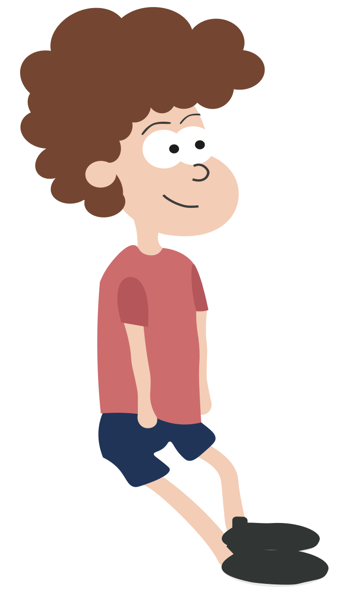Brian
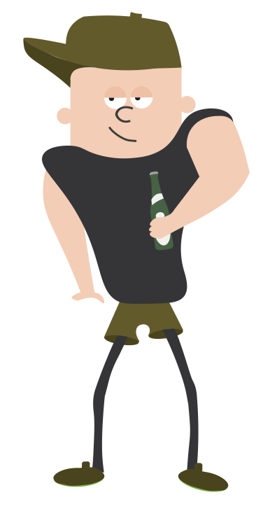Manfred
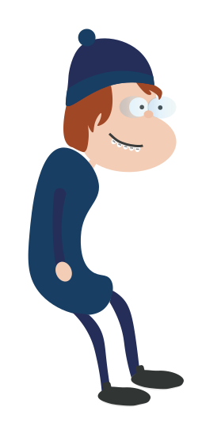Boris
Start knap
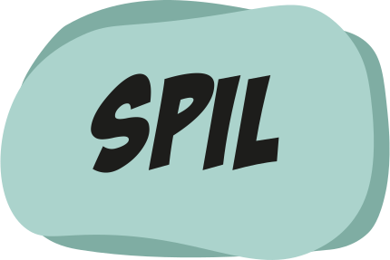start spil igen knap
Liv
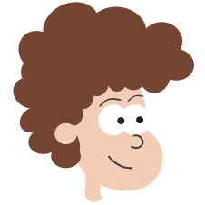Tabt liv
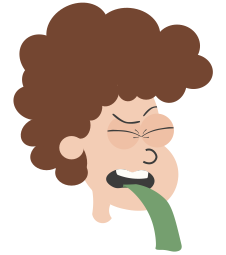Øl
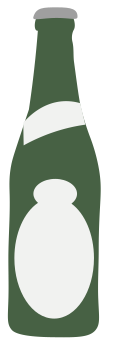Vandflaske
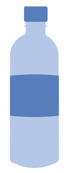Shot
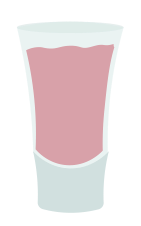Tid
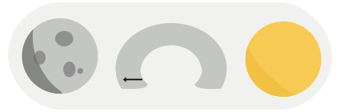Point
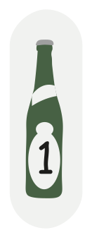Fuldebarometer
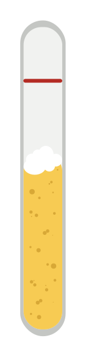